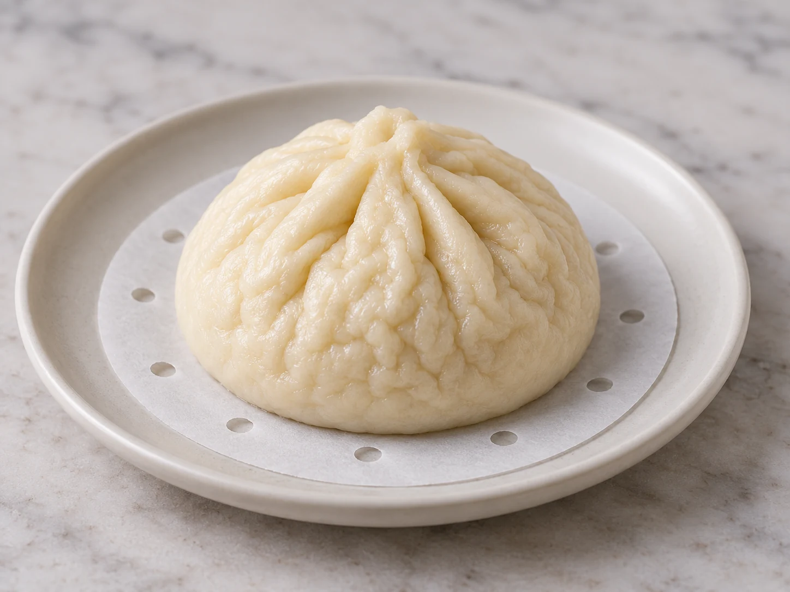
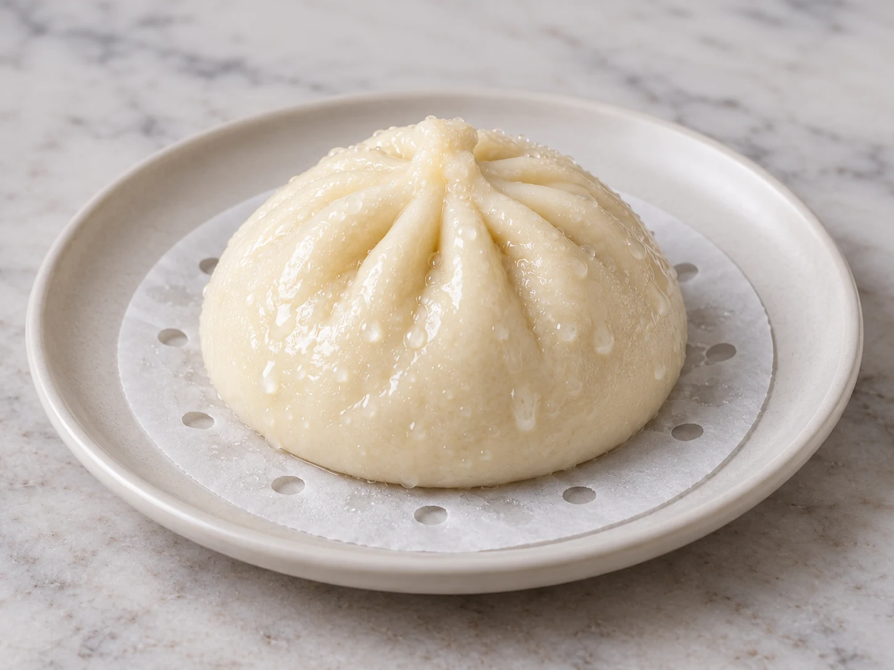
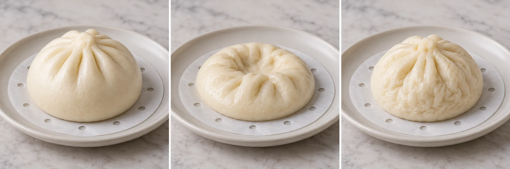

Proofing
Too little fermentation may leave tight crumb; dough that has weakened can spread or deflate.
Check rising clues →Match what you actually saw and felt. Bao Rescue separates look-alike failures, narrows the likely cause, and gives you one variable to change next batch — instead of a long list of generic possibilities.
Diagnose my bao — free →Browse symptoms ↗ Collapsed top?
Collapsed top?
Wrinkled skin?
Wet patches?Choose the closest match. The image helps recognition; it does not decide the cause by itself.
Generic advice can give you several plausible reasons. Bao Rescue asks follow-up questions to decide which branch deserves a test first, so you can learn from the next batch instead of restarting from scratch.
Troubleshooting is easier when you compare evidence instead of changing the entire recipe.
The same visible problem can come from different causes. Use these starting points to decide what to check—not as proof of a diagnosis.
Too little fermentation may leave tight crumb; dough that has weakened can spread or deflate.
Check rising clues →Look at when the buns changed shape, and whether the steam stayed steady.
Steaming guide →Visible lid drips, wet spots or pitted skin can shift attention toward excess water.
Spot moisture clues →Flour, hydration and kneading all affect how the bun holds gas and stays tender.
Explore flour choices →Wet filling or loose seams can cause leaks and make the bottom harder to steam evenly.
Stop filling leaks →Small, useful guides that help you understand a failure before you try another recipe.
Ingredients, dough handling, shaping and the basics of steaming.
SYMPTOM DEEP DIVECompare proofing, condensation and collapse timing before making a change.
TEXTURE TROUBLESHOOTINGWhat to inspect in the crumb and which possible causes to separate.
First note whether the buns were fragile or spread before steaming, whether you saw wet patches or lid drips, and whether they shrank during steaming or only after cooling. These clues help separate over-proofing, moisture and handling issues. Read the collapse guide.
Check whether shaped buns have expanded at all, whether they still feel unusually tight and whether the crumb is compressed after steaming. Time alone is unreliable because room temperature changes fermentation speed. Compare the clues.
Check the crumb while cooled enough to handle, compare bun size and cooking time, and review hydration and proofing. A gummy center can have several causes, so test just one variable next time. See the troubleshooting steps.
Start the free guided diagnosis. The follow-up questions are designed to distinguish look-alike failures rather than assign a cause from a photograph alone.
Symptom images are AI-generated visual references, not photographs of actual Bao Rescue test batches. Use your own observations for diagnosis.

Start with the guide that matches your actual symptom, or use the free diagnosis if two causes seem possible.
Basic diagnosis stays free. The optional Next-Batch Fix turns the diagnosis into a small experiment so you know what to change — and what not to change.
The premium unlock is offered from the result flow. Payment is processed securely by Waffo Pancake.